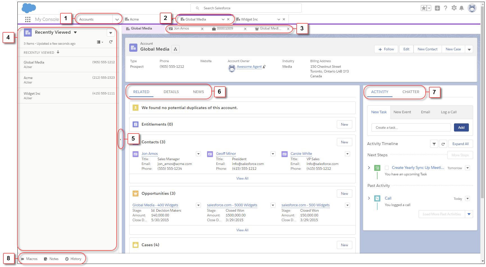
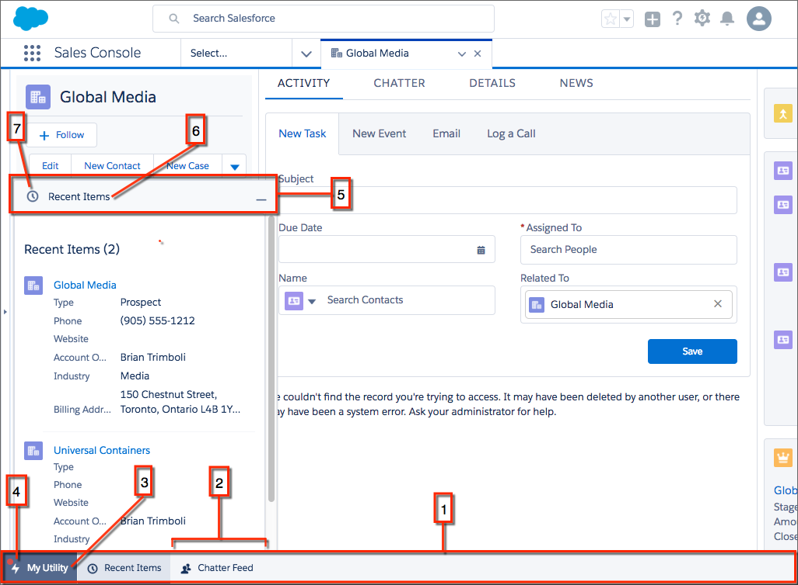
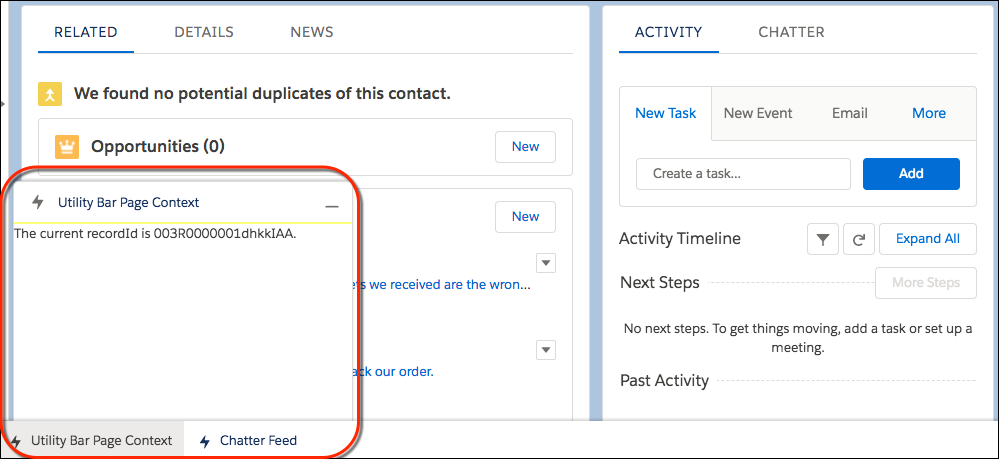
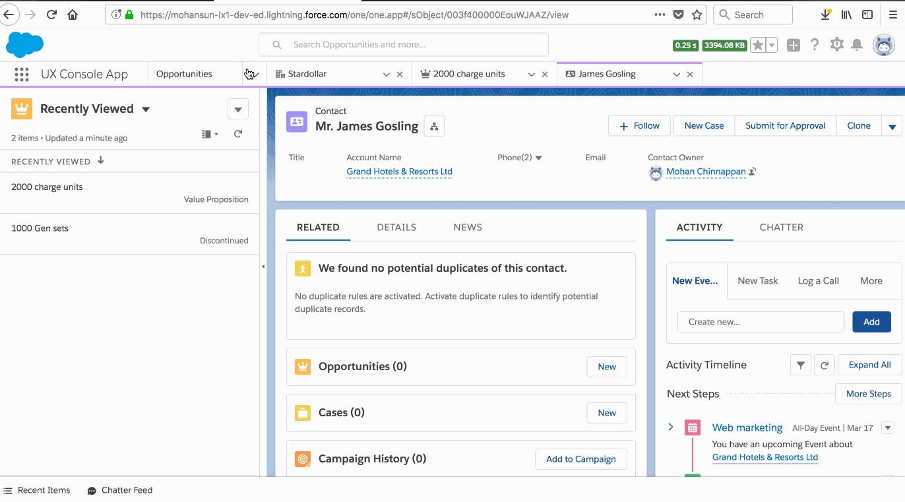

{{appName}}
- Lightning console apps allow users to quickly find the information they need, and make edits while viewing multiple records on one screen .
- Lightning Console JavaScript API gives the programmatic access to Lightning console apps, so you can fully integrate Lightning console apps with the Lightning framework and extend them to meet your business needs
2 APIs
- Workspace API:
provides methods for opening, closing, and getting information about workspace tabs and subtabs.
can be used in Lightning console apps only. - Utility bar API:
provides methods that can be used from Lightning components in the utility bar to
open, resize, or minimize a utility.
can be used in Lightning apps with standard or console navigation
Lightning Console UI

- navigation bar
- workspace tabs
- subtabs
- recently viewed
- split view pane
- details area
- feed
- utilities - utility bar
Lightning Console - Utility Bar

- The utility bar
- The Chatter Feed utility
- A utility label
- A utility icon
- The panel header
- The panel header label
- The panel header icon
workspaceAPI and utilityBarAPI components
- lightning:workspaceAPI: gives access to the Workspace API
- lightning:utilityBarAPI: gives access to the Utility Bar API
// -------
({
openUtilityBar : function(component, event, helper) {
var utilityAPI = component.find("utilitybar");
utilityAPI.openUtility();
}
openTab : function(component, event, helper) {
var workspaceAPI = component.find("workspace");
workspaceAPI.openTab({
url: ‘#/sObject/001R0000003HgssIAC/view’,
focus: true
}).then(function(response) {
workspaceAPI.getTabInfo({
tabId: response
}).then(function(tabInfo) {
console.log(“The recordId for this tab is: “ + tabInfo.recordId);
});
})
.catch(function(error) {
console.log(error);
});
}
})
JavaScript Promises
// Methods in the Lightning Console JavaScript API return results using promises
({
focusNewTab : function(component, event, helper) {
var workspaceAPI = component.find("workspace");
// get the tab ID of the focused tab
workspaceAPI.openTab({
url: '#/sObject/001R0000003HgssIAC/view',
label: 'Global Media'
}).then(function(response) {
// respsone from the promise
// Promises can simplify code that handles
// the success or failure of asynchronous calls
workspaceAPI.focusTab({tabId : response});
})
.catch(function(error) {
// Promises can simplify code that
// handles the success or failure of asynchronous calls
/*
The catch() method returns a promise and
accepts a single function parameter that’s called if the promise is rejected.
This function has one argument that shows the reason for the rejection.
The promise returned by catch() is rejected if the function that is passed
in either throws an error or returns a promise that’s rejected.
Otherwise, the promise is resolved.
*/
console.log(error);
});
}
})
Using Page Context in the Utility Bar API
// implements force:hasRecordId and listens for changes to the record being viewed
// When this component is added to a utility bar,
// it displays the recordId of the record currently being viewed.
The current recordId is {!v.recordId}.
// controller
({
onRecordIdChange : function(component, event, helper) {
var newRecordId = component.get("v.recordId");
console.log(newRecordId);
}
})
Utility Bar showing the current recordId
Creating Lightning Console App

Creating Lightning Console App - Utility Bar
Two APIS to interact with Salesforce console apps
- Lightning Console JavaScript API
- Salesforce Console Integration Toolkit
- Starting with API 42.0, Salesforce Console Integration Toolkit, many of the methods used in existing Visualforce pages and 3rd party web-tabs now work in LEX
- 3rd party content must be whitelisted in CSP Trusted Sites list to be used in LEX
- Lightning Console JavaScript API has methods for use with utility bar (LEX only)
ObjectId differences
- Lightning Console: Methods using
objectIdreturn 18-char case-insenstive Record-IDs - Salesforce Classic: They return 15-char case-senstive Record-IDs
Differences
- Use Lightning Console JavaScript API methods in JS controller of the Lightning Component
- Visualforce / iframed 3rd party pages can work in both LEX and Classic : Use Salesforce Console Integration Toolkit:
with keeping in mind some of the Salesforce Console Integration Toolkit are not supported in Lightning Console JavaScript API
Differences - input syntax
- Methods in Lightning Console JavaScript API takes in JSON Object as argument:
workspace.openTab( { url:'#https://salesforce.com', focus: true, label: 'SFDC' } ); - Salesforce Console Integration Toolkit takes in individual parameters:
sforce.console.openPrimaryTabl(null, '#https://salesforce.com', false, 'SFDC', openSuccessFunction, 'SFDCTab' );
Close a specified primary tab or subtab
closeTab()
sforce.console.closeTab(
id:String, // id of the Primary Tab or subtab to close
(optional) callback: Function // to be called upon completion of the closing tab
)
Close a specified primary tab or subtab - sample
Click to close this tab
// standardController
// includeScript
openTab() for Lightning Experience
// component - has a button that, when pressed, opens a tab and sets the tab’s icon to the SLDS emoji icon.
({ // controller
openTab : function(component, event, helper) {
var workspace = component.find("workspace");
workspace.openTab({
url: '/sObject/001R0000003HgssIAC/view',
focus: true,
callback : function(error, response) {
workspace.focusTab({tabId : response });
}
});
}
})
setTabIcon() for Lightning Experience
// component - has a button that, when pressed, opens a tab.
({ // controller
setFocusedTabIcon : function(component, event, helper) {
var workspace = component.find("workspace");
workspace.getFocusedTabInfo({
callback : function(error, response) {
var focusedTabId = response.tabId;
workspace.setTabIcon({tabId : focusedTabId, icon: 'like', iconAlt: 'like' });
}
});
}
})
Lightning Events example
// Use events and handlers in your Lightning components and controllers
// to respond to events like workspace tabs opening, closing, or
// gaining focus.
// prints a line to the browser’s developer console
// when a tab is closed
// component
// controller
({
onTabclosed : function(component, event, helper) {
console.log("Tab closed.");
},
})
Classic methods supported in Lightning Console
-
closeTab()
-
focusPrimaryTabById() -
focusSubtabById()
-
getEnclosingPrimaryTabId() -
getEnclosingTabId()
-
getFocusedPrimaryTabId() -
getFocusedPrimaryTabObjectId()
-
getFocusedSubtabId() -
getFocusedSubtabObjectId()
Features in Classic console not available in Lightning Console
- Resizeable split view - In Salesforce Classic, you can adjust the width of a pinned list. In Lightning Experience, you can’t adjust the width of split view.
- Custom keyboard shortcuts
- Interaction logs
- Dynamic list updates (push notifications)
- Multi-monitor—pop-out utilities ( multi-monitor components)
- Region presentation—size